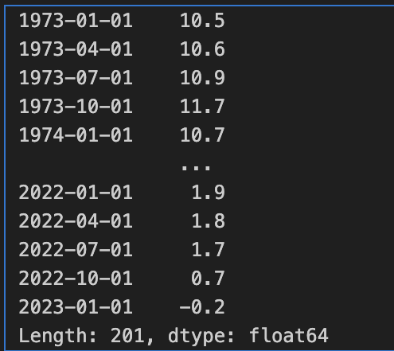
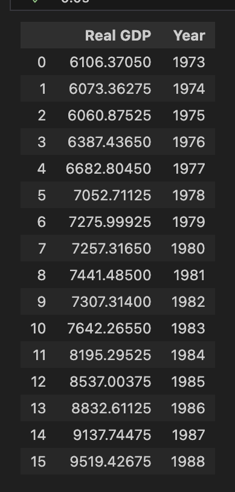
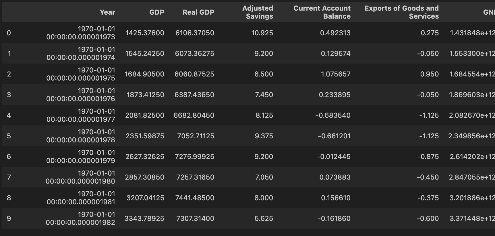
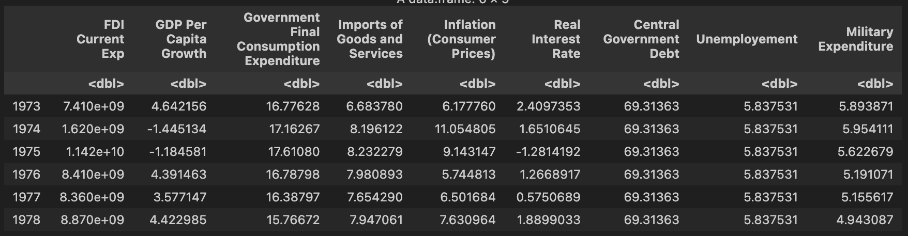
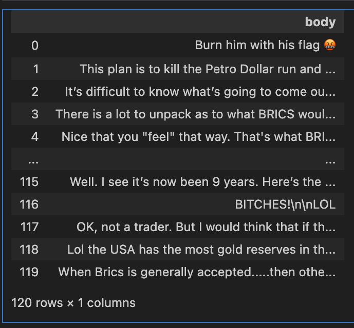
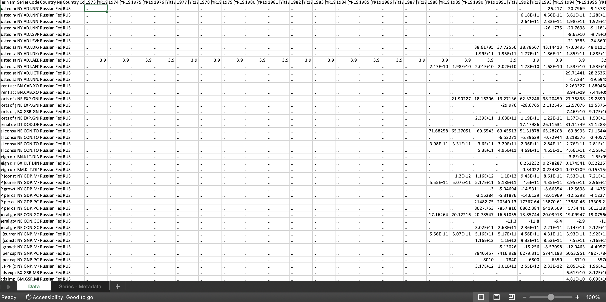

#pip install fredapi
from fredapi import Fred
import pandas as pd
fred = Fred(api_key='10fbe66f8f62ad7f44097cca867bf01f')Data Gathering
Since the entire nature of the data is focused on purely data that is quantitative in nature as we are attempting to understand the macro-economic nature of the BRICS, we need data that is retreived from a data bank consisting of a lot of columns. For this topic, the most reliable websites for data collection were either to physically search for the data or through the usage of APIs (Application Programming Interface).
Data Source
For this project, the data is that is majorly required is numerical data. I am retrieving data through API’s and by downloading data from World Bank.
Quantitative Data
The data required for this project is a culmunation of macroeconomic and fiscal indicators of all the five emerging economics for which individual data has to be retrived using various sources.
Python API
The Python API used for this project is the FRED API. The FRED-API is a web service that allows developers to create programmes and construct apps that retrieve statistical information about the economy from the FRED and ALFRED websites hosted by the Federal Reserve Bank of St. Louis’ Economic Research Division using Python.
Since we are using data of the 5 countries, it can be interesting to compare it with a hegemonic and the most powerful country in the world, The United States of America so using the FRED-API, you can clone few macroeconomic indicators from here.
The FRED API has been called and the series IDs have been added to the data.
series_id_1 = 'GDP' # for GDP US
series_id_2='GDPC1' # for Real Gross GDP
series_id_3='W207RC1Q156SBEA' # Adjusted Saving (% of GNI)
series_id_4='USAB6BLTT02STSAQ' # Current account balance (% of GDP)
series_id_5='A019RE1Q156NBEA' # Export of Goods and Services as percentage of GDP
series_id_6='MKTGNIUSA646NWDB' # GNI
start_date = '1973'
end_date = '2023'The data has been fetched using the ‘fred.get_series’ function.
# Fetch the data
gdp_u = fred.get_series(series_id_1, start_date, end_date)
realgdp_u = fred.get_series(series_id_2, start_date, end_date)
adjsavings_u = fred.get_series(series_id_3, start_date, end_date)
currentaccbalance_u = fred.get_series(series_id_4, start_date, end_date)
exportsofgoods_u = fred.get_series(series_id_5, start_date, end_date)
gni_u= fred.get_series(series_id_6, start_date, end_date)
The image shown above, that was how the individual data had been called.

After regrouping the data, this is how the final data of each dataframe looks like.

This is the final view after merging the entire dataset.
To access the code: Click here To access the files: Click here
R API
For R API, to retrieve more data about the US, R API, wbstats() API has been used.
After the ‘wbstats’ library has been called, the series IDs are inserted and then the final data is merged. The data is being collected from 1974 to 2023
#install.packages("wbstats")
library(wbstats)
library(dplyr)
Attaching package: 'dplyr'The following objects are masked from 'package:stats':
filter, lagThe following objects are masked from 'package:base':
intersect, setdiff, setequal, union# Specify the indicators you want to fetch
indicator_a= ("BN.KLT.DINV.CD") #FDI Current Expenditure for the United States
indicator_b= ("NY.GDP.PCAP.KD.ZG") # GDP per capita growth for the United States
indicator_c= ("NE.CON.GOVT.ZS") # Government Final Consumption Expenditure for the United States
indicator_d= ("NE.EXP.GNFS.ZS") # Imports of Goods and Services as a Percentage of GDP for the United States
indicator_e= ("FP.CPI.TOTL.ZG") # Inflation (consumer prices) for the United States
indicator_f= ("FR.INR.RINR") # Real Interest Rate for the United States
indicator_g= ("GC.DOD.TOTL.GD.ZS") # Central Government Debt Total (% of GDP) for the United States
indicator_h= ("SL.UEM.TOTL.ZS") # Unemployment Rate for the United States
indicator_i= ("MS.MIL.XPND.GD.ZS") # Military Expenditure for the United Statesdata1 <- wb(indicator = indicator_a, country = "US", startdate = 1973, enddate = 2023)Warning: `wb()` was deprecated in wbstats 1.0.0.
ℹ Please use `wb_data()` instead.data2 <- wb(indicator = indicator_b, country = "US", startdate = 1973, enddate = 2023)
data3 <- wb(indicator = indicator_c, country = "US", startdate = 1973, enddate = 2023)
data4 <- wb(indicator = indicator_d, country = "US", startdate = 1973, enddate = 2023)
data5<- wb(indicator = indicator_e, country = "US", startdate = 1973, enddate = 2023)
data6 <- wb(indicator = indicator_f, country = "US", startdate = 1973, enddate = 2023)
data7 <- wb(indicator = indicator_g, country = "US", startdate = 1973, enddate = 2023)
data8 <- wb(indicator = indicator_h, country = "US", startdate = 1973, enddate = 2023)
data9 <- wb(indicator = indicator_i, country = "US", startdate = 1973, enddate = 2023)
The following is the final snapshot of the data.
Textual Data
Python API
Understanding the perspective of people on the emergence of BRICS is just as crucial, hence we need to ensure that the public opinions have also been catered and taken into consideration. For this, the REDDIT API for the subreddits have been used. REDDIT API with limited access helps us extract the subreddits for that specific day with the ragin subreddits. The Python PRAW has been used to retrieve the data.
#!pip install spacy
#!python -m spacy download en_core_web_sm
#nltk.download('wordnet')
#nltk.download('omw-1.4')
from pprint import pprint
import numpy as np
import pandas as pd
import matplotlib.pyplot as plt
import seaborn as sns
import nltk
from sklearn.feature_extraction.text import CountVectorizer
import praw
from praw.models import MoreComments
user_agent='Sheeba_Economic'
reddit= praw.Reddit(
client_id="rszab0dBkcT7NdZr6MftpQ",
client_secret="mBFjTSN3YXoSimkU7eZ1H0SoD-f2Yw",
user_agent=user_agent)posts = []
for submission in reddit.subreddit("Brics").top("all"):
for top_level_comment in submission.comments:
if isinstance(top_level_comment, praw.models.MoreComments):
continue
posts.append(top_level_comment.body)<string>:1: DeprecationWarning: Positional arguments for 'BaseListingMixin.top' will no longer be supported in PRAW 8.
Call this function with 'time_filter' as a keyword argument.
This is how the data looks.
Record Data
The record data which is the gist or the main skeleton of my project focuses on understanding individual data points of all entire data. It has been retrieved using almost 152 columns in hand which are important for the EDA. The EDA for my project is a never-ending process and will become better at time. Since for my regression, I’m predicting GDP, having a holistic understanding of current and constant sources of data is just as important. The way economic data is wired is completely different to how the other data works, which is why, it has to be worked with caution.
The data collected is in 5 parts.
- INDIA
- BRAZIL
- CHINA
- RUSSIA
- SOUTH AFRICA
This is how the gist of one of the datasets looks like:
